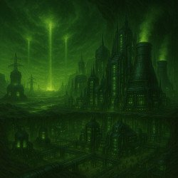
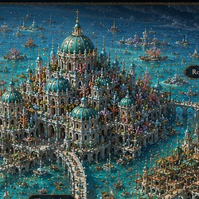
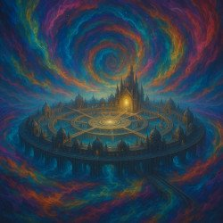

The Pantheon Wars
Twelve god-cores. Twelve Overlords who rule as living gods. And a prophecy, erased from every archive but one, that says twelve thrones will fall — and one will rise.
Twelve Worlds. Twelve Cages.
Ten thousand years ago, an unknown civilization sealed twelve God-Cores into twelve worlds — engines of a lost technology fused with a primordial force called the Aetherweave. Whoever binds to a core stops being a person and starts being worshipped as one.
The God-Cores
Ancient, buried, and singular — no two Overlords can hold the same core at once. They anchor a world's climate, its tectonics, and eventually, its ruler's mind.
The Overlords
Ascension grants near-immortality and dominion over an entire planet. It also guarantees slow neural decay — and a Rebirth Cycle that is rarely as clean as it sounds.
The Thirteenth Key
The Pantheon swears it's a myth: an artifact bound to no single world, rumored to unlock — or rewrite — all twelve at once. Every rebel who's died chasing it believed otherwise.
Twelve Thrones will fall, and One will rise. — fragment of the broken prophecy, erased from every archive but the ones that couldn't be found
Explore the Worlds
Each world bends to its Overlord's nature and nothing else. Here are six of the twelve — see the full atlas.
The City That Never Forgets
A rain-drowned metropolis built on the information black market — because Syn owns every memory inside it, including the ones you didn't know you'd lost.
Learn more about Syn Dravus →The Throne Built on Smoke
Once a democracy. Seized thirty-five years ago in a coup that still hasn't been avenged. Iron, fire, and red banners over a people who remember what they lost.
Learn more about Malric Thorne →
Reanium — Overlord: Korrus ValeThe Wasteland That Remembers
Glassed by the first war between gods and never rebuilt. Its survivors live underground — and its ruler is nursing a gambit only the dead should attempt.
Learn more about Korrus Vale →
Asmecu — Overlord: Lysara VentheThe Palace Above the Abyss
A city afloat on the eye of something vast and unseen, ruled by a queen whose crown is carved from the bones of the Overlord before her.
Learn more about Lysara Venthe →The Jungle That Feels Pain
Living weapons that remember their victims. Prisons grown from trees that used to be people. Nothing in Babki forgets, either — it just stops speaking.
Learn more about Zura Kaleth →
The Nexus Veil — Neutral GroundThe Table With Thirteen Seats
Where the twelve Overlords convene in uneasy alliance — around a thirteenth seat that has stood empty for ten thousand years, as a warning nobody explains.
Learn more about the Nexus Veil →
The Mindweaver's Lie
In the rain-slicked undercity of Neoh, a thief named Kael Veyr carries a secret he doesn't understand: a shard of crystal that pulses like a second heartbeat, and memories that were never supposed to survive Syn Dravus's purges. When a deal goes bad and the only way out is a vault no one has ever robbed, Kael is pulled into a heist that will crack open the truth about the Pantheon itself — and the thirteenth world every record insists doesn't exist.
Every world in this book is a cage. What differs is who built it, and why.See All 14 Books
The Mindweaver's Lie — The Album
Book One comes with its own soundtrack: thirteen original compositions, one written for every world in the Pantheon. Press play before you turn the first page.
Listen on SpotifyFrom the Nexus Veil
Welcome to the Pantheon Wars
The saga begins: twelve worlds, one prophecy, and the first thief foolish enough to go looking for it.
The Sound of Twelve Worlds
Book One comes with its own soundtrack — thirteen original tracks, one for every world you're about to enter.

Get word when a new world opens
No spam, no Overcode surveillance — just updates on new books, lore drops, and the soundtrack as it's released.
Read one book's worth of secrets. Unsubscribe whenever the Overcode allows it (i.e. any time).